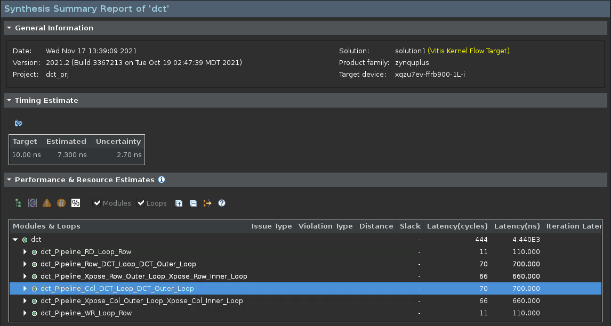

Vitis™ アプリケーション アクセラレーション チュートリアル |
2.シミュレーションの実行、合成の実行、および結果の解析¶
C シミュレーションの実行¶
プロジェクトにソース コードおよびテストベンチを追加したので、C シミュレーションを実行できるようになりました。
ヒント: テストベンチの機能の詳細は、『Vitis 統合ソフトウェア プラットフォームの資料』 (UG1416) の Vitis HLS フローのテストベンチの記述を参照してください。
Flow Navigator から [C Simulation] → [Run C Simulation] をクリックします。
[C Simulation Dialog] ダイアログ ボックスが表示されます。

[Enable Pre-synthesis Control Flow Viewer] チェック ボックスをオンにして、C シミュレーション後にデザインの制御フロー ビューが生成されるようにします。
注記: このオプションは Windows では使用できません。
[OK] をクリックします。
シミュレーションが終了すると、シミュレーション結果を含む
dct_csim.logファイルが表示され、合成前の制御フロー グラフも表示されます。ログ ファイルには、実行されたテストベンチからの print 文と、テストで問題が検出されなかったことを示す情報が表示されます。制御フロー グラフには、次の図に示すように、コードの制御構造がわかりやすく表示されます。Vitis HLS でコードがどのように解釈されるかを確認してください。
注記: この制御構造は、
ifおよびswitch文のなどのさまざまなループおよび条件文によるコード内の分岐を示します。グラフを拡大し、DCT 関数の構造を確認します。これには、次の要素が含まれます。
read_data: DDR からのデータを配列として読み出し、行列に変換します。
dct_2d: 行列値にコサイン変換を適用して値の行列を処理します。
write_data: 行列を配列に変換して、DDR に結果を戻します。
グラフの下の [Loops] ビューを確認します。
このビューには、コード内で見つかったループと、ループ反復に関連する基本的な統計およびタイミングが表示されます。ラベルのないループには Vitis HLS により自動的に名前が付けられ、これらの名前がループに関連付けられます。これで、[Console] ビューでループを指定する際に、これらの名前を使用できるようになります。ビューでループを選択すると、そのループが制御フロー グラフおよびソース コードでも選択されます。
制御フロー グラフの主な機能は、次のとおりです。
C/C++ コードの制御パス (赤の矢印で示されるコード プロファイリングのアーチファクト) を表示します。
赤い矢印の % は、特定の分岐とほかの分岐にかかる時間の割合を示します。これにより、注目すべき時間のかかる部分がわかります。
注記: このパスは、テストベンチの実行で生成されるので、テスト特定です。
メモリ読み出し/書き込みが表示されるので、メモリ ポートの競合問題を理解しやすくなります。
メモリ アクセスが異なる分岐にある場合、これらのアクセスは同時に発生しないので、競合は発生しません。
メモリ アクセスが同じ分岐にある場合、コードの同じシーケンシャル部分に複数のメモリ アクセスがあるので、ループ II 違反が発生することがあります。
C 合成の実行¶
合成を実行するには、[C Synthesis] ツールバー ボタンをクリックします。
[C Synthesis] ダイアログ ボックスが表示されます。

[OK] をクリックします。
合成コマンドが実行され、[Console] ビューに実行された処理が表示されます。この出力で合成中にツールで実行された動作を確認します。表示される処理の一部を次に示します。
プロジェクトおよびソリューションの初期化でソースおよび制約ファイルを読み込み、合成のアクティブ ソリューションを設定。
コンパイル開始でソース ファイルをメモリに読み込み。
インターフェイス検出とセットアップで関数のポートおよびブロック インターフェイスを確認して生成。
ポート/インターフェイスのバースト読み出しおよび書き込み解析。
コンパイラがコードを演算に変換。
合成可能性チェックを実行。
トリップカウントのしきい値でループを自動的にパイプライン処理。
自動およびユーザー指定の両方でループを展開。
関連性および接続性を考慮して演算を調整。
ループをフラット化してループ階層を削減。
部分的な書き込み検出 (メモリ ワードの一部を書き込み)。
アーキテクチャ合成を終了し、スケジューリングを開始。
スケジューリングを終了し、RTL コードを生成。
FMax およびループの制約ステータスをレポート。
Vitis HLS ツールでは、小さな関数は自動的にインライン展開され、ロジックが上位の呼び出し関数に統合され、反復回数が少ない小さなループがパイプライン処理されます。これらの機能は、ユーザー指示子またはプラグマで設定できます。
合成が終了すると、次の図のように合成サマリ レポートが表示されます。結果を確認してください。

合成結果を見ると、合成前の制御フロー図にあったさまざまなサブ関数がレポートされなくなっています。これは、ツールがこれらの関数を自動的にインライン展開したからです。特定の関数がインライン展開されないようにするには、その関数に INLINE OFF プラグマまたは指示子を追加するか、デザインに DATAFLOW 最適化を追加します (このチュートリアルの後半で実行)。
Vitis HLS では、指定した反復数よりも少ないループも自動的にパイプライン処理されます。デフォルトでは、反復数が 64 未満のループがパイプライン処理されます。パイプライン処理では、II が 1 になるように試みられます。II は、ループが処理されてから次の反復までのクロック サイクル数です。
II=1でループをパイプライン処理する場合、次の反復は次のクロック サイクルで開始されるのが理想です。
結果の解析¶
合成サマリ レポートには、パフォーマンスおよび使用率の見積もり、およびデザイン内のインターフェイスおよびデータ転送に関するデータなど、合成の結果が表示されます。これで、デザインを解析して、レポートされた問題を検証できるようになりました。
IDE 下部の [Console] ビューの横にある [Guidance] ビューをクリックします。このビューには、次の図に示すように見つかった問題に関する詳細が表示されます。
ヒント: [Guidance] ビューが表示されていない場合は、[Window] → [Show View] → [Guidance] をクリックします。

ガイダンス メッセージには、合成中に検出された問題がレポートされ、可能な対処方法が提案され、詳細情報へのリンクが提供されます。
Flow Navigator で、[C Synthesis] → [Reports and Viewers Schedule Viewer] をクリックして、スケジュール ビューアーを表示します。
スケジュール ビューアーの左側には、合成された機能の各操作が時系列順にリストされます。デザインの制御段階が、ステップ 0 から完了までのタイムラインとして水平に表示されます。リストで操作を選択すると、それらの接続関係が表示されます。
デフォルト ビューには、すべての操作が表示されます。ただし、スケジュール ビューアーの上部にあるドロップダウン リストでは、特定の関数、ループ、または要素を選択できます。